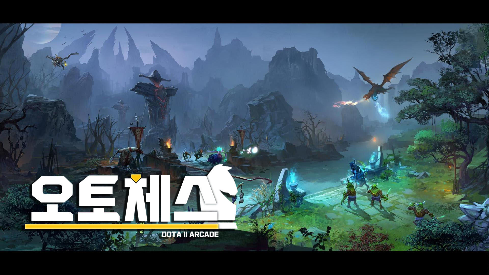

도타-오토체스 영웅 기본 룰:
<각 영웅들의 레벨은 판매 가격과 일치한다.>
<2성, 3성으로 조합하면 레벨이 각각 2씩 늘어난다.>
<유닛을 팔아버릴 때 얻는 골드의 양도 영웅 레벨과 일치한다.
>
<따라서 1성 유닛을 사고 팔면 골드 손해가 없고, 1골드 유닛을 2성으로 만든 후 팔 경우에도 골드 손해가 없지만,>
<2골드 이상의 유닛을 2성 이상으로 조합한 뒤 팔아버리면 골드 손해가 발생한다.>
<예외적으로 요술사를 드루이드 특성을 이용해 2성으로 만든 뒤 팔아버리면 1골드 이득을 볼 수 있다.>
가격별 영웅 종류
*상세한 유닛 설명은 각 등급에 링크*
Common $1
| 항마사(Anti-Mage) | 도끼전사(Axe) | 박쥐기수(Batrider) | 현상금 사냥꾼(Bounty Hunter) |
|---|---|---|
| 태엽장이(Clockwerk) | 드로우 레인저(Drow Ranger) | 요술사(Enchantress) |
| 마르스(Mars) | 오거 마법사(Ogre Magi) | 그림자 주술사(Shadow Shaman) |
| 땜장이(Tinker) | 타이니(Tiny) | 얼음폭군(Tusk) |
Uncommon $2
| 야수지배자(Beastmaster) | 혼돈 기사(Chaos Knight | 수정의 여인(Crystal Maiden) | 자연의 예언자(Furion) |
|---|---|---|
| 가면무사(Juggernaut) | 루나(Luna) | 미라나(Mirana) |
| 모플링(Morphling) | 퍽(Puck) | 고통의 여왕(Queen of Pain) |
| 슬라다(Slardar) | 벌목꾼(Timbersaw) | 저주술사(Witch Doctor) |
Rare $3
| 야수지배자(Beastmaster) | 혼돈 기사(Chaos Knight) | 수정의 여인(Crystal Maiden) | 자연의 예언자(Furion) |
|---|---|---|---|
| 아바돈(Abaddon) | 리나(Lina) | 늑대인간(Lycan) | 바람순찰자(Windranger) |
| 전능기사(Omniknight) | 유령 자객(Phantom Assassin) | 레이저(Razor) | |
| 그림자 마귀(Shadow Fiend) | 저격수(Sniper) | 테러블레이드(Terrorblade) | 나무정령 수호자(Treant Protector) | 맹독사(Venomancer) | 바이퍼(Viper) |
Mythic $4
| 연금술사(Alchemist) | 디스럽터(Disruptor) | 파멸의 사도(Doom) | 용기사(Dragon Knight) |
|---|---|---|---|
| 빛의 수호자(Keeper of the Light) | 컨카(Kunkka) | 고독한 드루이드(Lone Druid) | 메두사(Medusa) |
| 강령사제(Necrophos) | 암살 기사(Templar Assassin) | 트롤 전쟁군주(Troll Warlord) |
Legendary $5
| 죽음의 예언자(Death Prophet) | 에니그마(Enigma) | 자이로콥터(Gyrocopter) | 리치(Lich) |
|---|---|---|
| 기술단(Techies) | 파도사냥꾼(Tidehunter) | 제우스(Zeus) |
등급별 영웅 개수
<00총 체스 말의 개수는 게임내 모든 플레이어가 공유한다 플레이어가 팔아버린 영웅이나 플레이어가 사망했을 때 가지고 있던 영웅은 다시 다른 플레이어에게 풀린다>
| 가격 | 개수 |
|---|---|
| $1 | 각 영웅당 총 45개 |
| $2 | 각 영웅당 총 30개 |
| $3 | 각 영웅당 총 25개 |
| $4 | 각 영웅당 총 15개 |
| $5 | 각 영웅당 총 10개 |
가격별 영웅 등장확률
<이오의 경우 독립 확률이 적용되며, 짐꾼이 1레벨일 때부터 등장할 수 있다.>
<이오가 등장할 확률은 0.3%이다. 따라서 체스말 상점에 나타나는 5개의 체스말 중 이오가 적어도 1개 이상 포함될 확률은 1.5%이다.>
| 짐꾼레벨 | Common($1) | Uncommon($2) | Rare($3) | Mythic($4) | Legendary($5) |
|---|---|---|---|---|---|
| 1 | 100% | 0% | 0% | 0% | 0% |
| 2 | 70% | 30% | 0% | 0% | 0% |
| 3 | 60% | 35% | 5% | 0% | 0% |
| 4 | 50% | 35% | 15% | 0% | 0% |
| 5 | 40% | 35% | 23% | 2% | 0% |
| 6 | 33% | 30% | 30% | 7% | 0% | 7 | 30% | 30% | 30% | 10% | 0% |
| 8 | 24% | 30% | 30% | 15% | 1% |
| 9 | 22% | 30% | 25% | 20% | 3% |
| 10 | 19% | 25% | 25% | 25% | 6% |
도움이 될만한 링크들
유닛 티어리스트:
https://qihl.gg/tierlist
전적 확인 사이트:
https://autochess.op.gg/
http://www.autochess-stats.com/